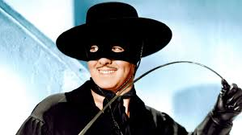
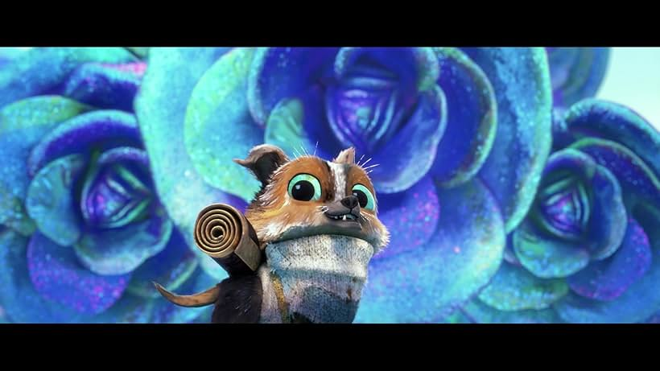
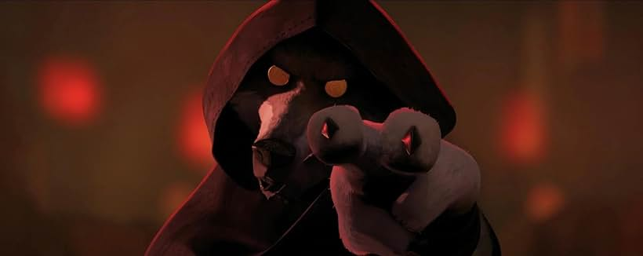

Surely there are plenty of good animated films out there over the past few decades. There was The Lego Movie, a good majority of Pixar movies, the How To Train Your Dragon and Kung Fu Panda films were good too. There were bad ones too of course. We got the sequels from the Cars Franchise, The Despicable Me Franchise was declining as a whole, and Dreamworks's films were hit or miss as well. Disney, despite being a big name, started falling from it's thrown of greatness yet again once they killed of 2d animation. Unfortunately, we are getting the latter as of late, getting more hyperrealistic or having terrible writing.
But a year ago, I saw this really interesting movie. This masterpiece of a film had an amazing cast, wonderful story, breathtaking animation, and a very mature theme. This film is none other than"Puss In Boots 2:The Last Wish"

^That is an image of the movie
In case you don't know, Puss in Boots is a character part of the cast of Shrek. He was introduced as a bounty hunter in Shrek 2 ordered by the king to kill Shrek. He becomes friends with Shrek and Donkey and he has this character similar to Zorro from the 19998 film "The Legend of Zorro".
^Image of Zorro
Puss already had a film about getting a golden egg from a beanstalk and, to be honest, it was pretty mediocre. So I didn't expect there to be a sequel at all. Until, of course, there was. So you may be expecting this sequel to be terrible. Dreamworks was not doing so good in that year especially when it was sequels. But this movie, was just... different. It had this vibrant art style never seen before. Like, as the creators would say, it was from a storybook.

Puss in Boots, voiced by Antonio Banderas
The Film is about the titular feline "Puss in Boots". After using up his 8 out of 9 lives in vain, he intends to take back those lives after a certain bounty hunter tries to take that final one. He goes on an adventure to find the wishing star before the baker Big Jack Horner or Goldilocks and her bear found family get to it. He is accompanied by his eventual love interest, Kitty Softpaws and comic relief character, Perrito and honestly, I'm not a big fan of a character whose sole purpose is to crack one-liners, but Perrito isn't just cracking one-liners. He has a purpose, being kind of like a guide or comforter of the group, comforting Puss when he was having a panic attack. Speaking of which, this film has an accurate depiction of a panic attack. It is not played for laughs, Puss is not running around and screaming like a maniac, and Perrito does not slap him out of it, which is why many panic attacks fail. Now let's talk about the villain, or should I say, the villains.
Perrito, played by Harvey Guillen

Kitty Softpaws, played by Salma Hayek

^enjoy this wonderful picture of a panic attack
The first we'll talk about is Goldilocks. She wants the wishing star cause she's an orphan and wants parents that aren't bears. She is the only antagonist with a backstory we can sympathize with unlike Big Jack Horner. He is the owner of a pie factory who wants the wishing star so he can have all the magic in the world. His tragic backstory, he lost to a wooden puppet. He had nothing in life. Only loving parents, lots of money, stable living, a pie factory to inherit, not much basically.


^Jack Horner, played by John Mulaney, Goldilocks, played by Florence Pugh, The Bears, played by Olivia Coleman, Ray Winstone, and Samson Kayo
But let's talk the real deal, the highlight, the main antagonist, the bounty hunter. He has very little time in the film, the second least amount of time before Farquad. But every minute he is on screen, it is amazing, he wastes no time on screen even if he is just standing and staring. He seems like he is always watching, which is true because well, he is Death. Puss has been using his life wastefully and now he must pay for it. The best part is the fact he is not inherently evil, he is merely doing his job as the grim reaper and spares Puss's life when he realizes the fault in his mistake.
It is an amazing movie, 4.8/5 stars.
Death, played by Wagner Moura
References: https://www.imdb.com/title/tt3915174/
https://www.hollywoodreporter.com/business/business-news/zorro-licensor-role-reversal-faces-trial-copyright-infringement-1111593/
https://www.businessinsider.com/puss-in-boots-the-last-wish-panic-attack-scene-making-2023-1